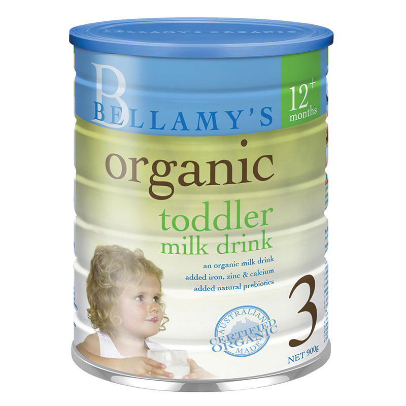

|  | Bellamy’s贝拉米有机婴儿奶粉三段是一种营养全面，优质的有机婴幼儿配方奶粉。富含乳清蛋白，易调和溶解，粉质细腻，口感清淡，容易吸收，不上火。专为你的宝宝从1岁到3岁营养补充设计，以满足婴儿生长的营养需求。适合不采用母乳喂养或混合喂养的宝宝。全面营养支持婴儿不同阶段的消化和免疫系统，促进宝宝的生长发育。全面提升宝宝的抵抗力。 产品特点
○ 专为1-3岁的宝宝营养均衡设计，科学配比，纯天然有机原料。 ○ 携带服用简单、快捷。粉质细腻，易于溶解，拥有自然的乳香。 ○ 温和易吸收，成分安全可靠，无添加任何人工色素、香精、防腐剂。 产品功能
○ 能满足宝宝在成长不同阶段的营养需求。 ○ 有助于促进婴幼儿脑组织和智力发育。 ○ 有助于促进骨骼和牙齿健康成长。 ○ 有助于促进宝宝的免疫系统，神经系统和生殖系统的生长发育。 主要成份
○ 乳清蛋白 ○ 有机植物油 ○ 多种维生素 ○ 多种矿物质 ○ 叶酸 ○ 生物素 ○ 核苷酸 适用人群
○ 适用于1-3岁的宝宝。 使用方法
○ 将奶瓶、奶嘴和瓶盖彻底清洗干净。 ○ 将洗干净的奶瓶、奶嘴和瓶盖放在清洁的水中，煮沸5分钟消毒。 ○ 将开水冷却，倒入奶瓶，建议水温38-42度（一定要先放水再放奶粉）。 ○ 每60毫升水加一平勺奶粉，请使用罐中的原配勺，不要挤压，在罐口处刮平勺上多余的奶粉。 ○ 盖好奶瓶，立即摇匀，喂哺前需要确定奶液的温度适合喂食，让婴儿即刻食用。准备好的奶液后应立即饮用，喂完后多余的奶液请勿再食用。 注意事项
○ 使用前应仔细阅读标签； ○ 请勿将其放置在儿童可触及的地方； ○ 请存放于避光、干燥、不高于25摄氏度处； ○ 切勿用滚烫的开水冲泡奶粉，这样会破坏奶粉的营养成分； ○ 使用过程中如有过敏现象，请停止使用并寻医问诊； ○ 立即食用，当顿未吃完的牛奶，请立即丢弃，请勿重复使用或再加热后食用剩余牛奶。 |